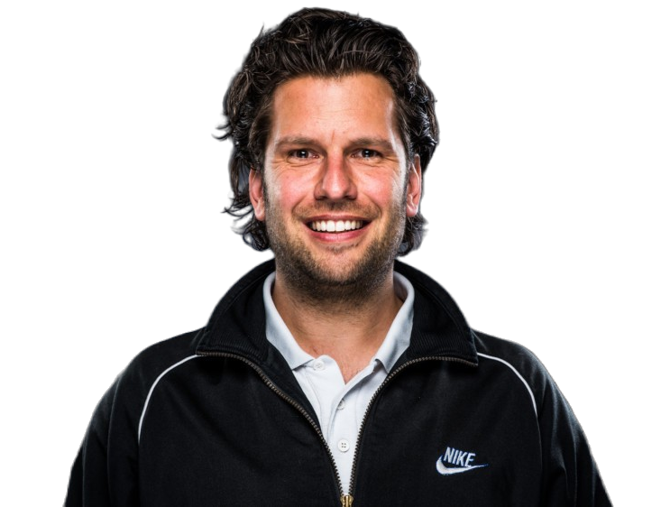

India has consistently produced junior grand slam champions, but success in senior singles tennis is hard to come by, especially in the recent decades.
Apart from Ramesh Krishnan, Vijay Amritraj, Jaidip Mukerjea from the men’s singles and Sania Mirza from women’s singles category, no other Indian singles player has been able to reach beyond the 3rd round of any grand slam since 1960.
Why do we stumble at the international stage despite so many of our young players picking up the racket and giving it their all generation after generation?
What’s stopping us from producing top 20, or even top 50 players consistently?
Are our players genetically predisposed to be weaker than their European/American counterparts? Or is it still the lack of proper training facilities or lack of parental support?
As an ardent Indian tennis fan, if these questions bother you too, read on.
My name is Hargun Singh Oberoi and I am one of the fallen youngsters from India’s tennis craze of the 2000s.
When I was 10, my dad, a taxi driver, found great passion in the sport of tennis, and like any tennis loving father, found me a local coach and bought me a tennis racket to kickstart my journey.
As I began, I found the sport very enjoyable. As a left-handed player, I loved the forehand topspin, and even without much training, I almost upset the top seed in a district tournament in a thriller, a moment that gave my father enough belief that I could someday make it pro, all before it was even three months into the sport.
Then began the loop of road trips, tournaments and even more practice sessions. We went to every possible district of Maharashtra, my dad’s taxi driving skills coming to great use. The competition was maddeningly fierce, with tempers rising and parents fighting with officials over every point and line call. We were all gunning for glory, playing each match like it was a grand slam final.
In all this frenzy, I must admit, the sport stopped being so enjoyable, and at times even physically painful. All I remember in the blur was hitting buckets and buckets of forehand, backhand and service from Monday to Sunday, inter spaced with even more tournaments.
My last ever “competitive” match was against Arjun Kadhe, (now an ATP ranked player) and I still remember how in that game, his father (far more “passionate” than my own) kept a tab on him from the sidelines. I lost the game, and felt it was best to leave the sport to the “pros” as I moved on in my life to other, less taxing endeavors
My rebellious younger years, courtesy: Mumbai Mirror
Decades later, after rediscovering the joy of the sport in Bangalore, I looked around to see how my childhood compatriots were doing. But it came as quite a shock to find out that with the exception of a few handful of players from my generation, most of the top-ranking players did not continue much further with their tennis journeys. It’s as if almost everyone, including the “great talents of our time” collectively walked away from the sport in grand unison, to the dismay of many hopeful parents, and highly paid tennis coaches.
Why was it so? There was so much collective passion, with players playing like their lives depended on it, and now, all of a sudden, the sport was just an afterthought, an achievement of the past. This thought pestered me until a few months ago I finally decided to figure out what really caused this great sporting exodus of our generation.
“Why can’t India produce international level singles tennis players?”
When we began with a simple google search of the above question, the responses weren't very insightful. Almost every article on the subject had the same blueprint as below:
Insert personal story of a player who didn’t succeed, mention lack of infrastructure and parental support. Sprinkle a few points on the lack of funding and a sporting culture in India and finally blame the ruling government for corruption and failure to provide an environment for athletes to succeed.
But something just didn't add up. Even in 2022, when we have better sporting facilities, an encouraging government and more parents willing to support sporting dreams, our results in top international events don’t live up to the expectation.
So It was clear then that the answer to this question would need a little something more than a simple google search. So it was time to reach out to experts, that is, real coaches and players.
Through the lens of Christian Bosse
At first, we knocked on a few doors, and found the same regurgitated answers. I still remember sitting with a top national coach, who had only one thing to say, “Sports is zero in India”. He may be right, but this sort of answer or approach was not very helpful or motivating. So we moved on.

International Sports Science Specialist, Christian Bosse
Finally though, we found someone who gave us a fresh perspective. This person was Christian Bosse, Olympic Strength & Conditioning coach who has been working closely with Olympic medalists and world champions, and has also been instrumental in the rise Prajnesh Gunneswaran, currently one of India’s best singles tennis players.
Christian understands the Indian sports ecosystem even better than many Indian officials. Post his Masters degree in Sports Science, he spent a couple of years working with young athletes in a (now defunct) High performance Tennis center in Bangalore. This was a first of its kind center which aimed at nurturing young talent and emulated European tennis academies to develop young and rising sporting talents.
It is there that he first met Prajnesh, but after a brief spell, he moved to several other tennis centers working with top coaches and athletes. He finally took a role with the National Olympic committee in the Netherlands, where he helped a number of athletes in various sports to success at the Olympics and at other international event.
"If Indians are predisposed to be genetically weaker than Europeans, then so are Europeans weaker than those of African descent. Success in sport has more to do with the right preparation, starting with the physical aspect"
Based on his experience with Indian athletes, Christian strongly advocates that the Indian singles tennis players were unable to succeed in seniors tennis primarily because of the lack of focus on the physical preparation for the sport.
Asked if the Europeans/Americans were genetically predisposed to be physically superior to Indians, he dismissed the speculation as an excuse. He explained that if that line of reasoning was true, then those of African descent, who are the most physically gifted beings on the planet, should have been dominating all physical sports and athletic events, which is not even remotely the case. Yes, there is more to be desired in terms of facilities, funding and government support but the blind spot to sports specific fitness has hurt the Indian athletes most.
As an example, there is very little awareness on long-term development for young athletes. Instead of focusing on fundamental movements, he noticed that young Indian players played a lot more tournaments than they should for their age, thus picking up niggles and injuries early and carrying them to their adulthood. When faced with formidably stronger international counterparts, most players bodies simply disintegrate, causing career ending injuries, most notably of the shoulder, knee or back.
He mentioned that even Prajnesh had almost quit the sport for the same reasons, until he started working with him again. But since then, having better physical preparation for the sport, Prajnesh saw a meteoric rise in his ATP rankings.
After hearing so much about him, it was clear who we had to talk to next, Prajnesh himself.
Prajnesh Gunneswaran: Fighting the odds
Prajnesh Gunneswaran, all time high singles ATP rank 75
"Playing competitive international tennis without proper strength & conditioning is a professional death wish"
As an exception to most other Indian tennis pros, Prajnesh is still playing singles tennis at the age of 33, with his sights set to be in the ATP top 50 ranking, whilst other professional players, far younger than him, have switched to either doubles, or have moved on from the sport entirely.
Despite being one of India’s top ranked singles tennis players, Prajnesh was the easiest person to talk to. The night I spoke to him, He had won a grueling three setter against Georgian Alexandre Bakshi, being 2-4 down in the third set.
He spoke about the unusual opportunity he had with the High Performance Tennis center in Bangalore, where he first met Christian and that event changed his trajectory to pro tennis. But despite a successful junior career, he felt quite under-prepared for the senior level, and with a lack of focus on the physical preparation, it was difficult for him to consistently compete with international players.
All this struggle came to a head when he injured his knee, and despite a surgery and extensive physio work, he was just not able to get match fit. This dealt a serious blow to his professional career. With no clear goal to recovery, he was quite underwhelmed and almost quit the sport, but decided, as a last resort, to reach out to Christian to help him with his fitness and recovery. Since then, he has never looked back, and even at the age of 33, he dreams of breaking into the top 20 ATP rankings and continues to train in Germany.
His father, Mr. S.G Prabhakharan, in another interview with Indian Tennis Daily, mentioned how there was no ecosystem to guide athletes and parents on the demands of international tennis. Had it not been Prajnesh’s grit, moral support from his family and Christian’s expertise, Prajnesh could have easily been another fallen hero of Indian tennis.
Best of India v/s Best of the world
Clearly there were hints of a trend which I will call as “The great Indian Tennis Travesty”
Young Indian kids, joining the game in hoards, fighting tooth and nail in the junior tournaments, without proper physical preparation.A few of them survive the initial onslaught, and reach the global stage; but after a short stint, get battered and end up with career ending injuries. At this point, some walk away, while others find company, and find a second life in doubles tennis.
So it seems like Indian tennis is in a way a game of attrition, without a clear, distinct road map to succeed, unlike organized talent development in countries such as Spain, Australia, Germany or USA. The players who rise, succeed despite the system, not because of it.
If this systemic failure in Indian tennis was in fact true, more anecdotal references would not be of much benefit. It was time to take out the big guns and “look at the data”.
To get a fair account of long term trends, we tracked the top Indian junior players (boys and girls) from 2004-2012 and observed their performance in senior categories in the subsequent years until June 2022.
As we analyzed the data, we asked three questions:
1. How well are Indian players faring in the junior ITF categories
2. How well are those players performing in the senior categories
3. How well are junior champions from other nations doing in the senior categories
Table 1 Top Indian junior girls from 2004 to 2012 and their highest rank in the junior category
Table 2 Top Indian junior boys from 2004 to 2012 and their highest rank in the junior category
On following the career progression of the players, it became quite evident that Indian players, although exceptionally successful in the junior categories (some of them winning junior grand slams), shockingly failed to make a mark in senior ATP and WTA rankings. The one exception was Yuki Bhambri, junior world number 1, who had a fairly successful senior career, but after a knee injury, saw his rankings subsequently dwindle.
On the contrary, top players (boys and girls) from countries such as Spain, Great Britain, Australia, USA, where sport specific training and long-term athlete development principles are adhered to by coaches and academies, continued to perform well even in senior categories, producing top players like Nick Kyrgios and Emma Raducanu.
Disappointingly, most of the top Indian junior players considered in this analysis, have either switched to doubles tennis, or have quit playing tennis entirely. (You can read the entire study
here, which contains further analysis on the sports performance of Indian players v/s players from other countries)
The long road to recovery for Indian Tennis
So what do we conclude from these rather painful experiences of our athletes?
Athletic sports like tennis have now become more physically demanding than ever, so in order to reduce the performance gap with the top players of the world, we need to start with a focused approach to physical preparation.
Firstly, Christian emphasized that tennis players should specifically work on strengthening the shoulder and hip as they are the most vulnerable joints. Unsurprisingly, Somdev, one of India’s finest players battled with a shoulder injury till the end, and India’s latest sensation, Sumit Nagal just recently underwent a hip surgery. Strengthening these areas are crucial to avoid future trouble, even if you’re a casual player.
"For a left handed tennis player, the left shoulder and the right hip are most vulnerable. So those areas should be strengthened first. Vice versa for right handed players"
Secondly, we need more centers like the High Performance Tennis center, where Prajnesh met Christian. Centers that emphasize best practices, instead of brands and popular names. Tennis coaching at most beginner academies is just a bucket to bucket repetition with some “fitness” in between. We need our coaches and academies to do better.
But most importantly, Instead of playing a maddening number of tournaments, we need our young aspiring athletes to focus on tennis specific movements and we need more grassroots coaches who understand the fundamentals of long-term athlete development so that they can train young athletes better. To avoid the problems that haunt our current athletes, we need to “nip it in the bud” with future athletes.
How do we do all of this?
Infrastructural changes are hard to make, require huge investments and take time. But as a starting point, we could focus on our local coaches and provide them with the means to train young athletes better.
That’s what we’re trying to do at
SportShaala Academy
We aim to bring the best international coaches to teach the best practices and methods to local coaches and trainers in India. We are starting with a pilot course with Christian himself, and in the future we hope to bring other sports professionals to share their insights and methods.
We firmly believe that such an investment in the education and development of local coaches and trainers would give the highest return in increasing the pool of athletes with potential to consistently succeed on the international stage.
Prajnesh’s dad, who unfortunately is no longer with us, believed that our country easily has the potential to produce five or six top 50 players in the singles men's and women's categories, but without an ecosystem to guide players and parents, everyone has been left to fend for themselves and solve their own problems. That needs to change first.
"Many Indians who have done extremely well currently with their talent, game and brains haven’t been able to break into the Top 50 because of sheer lack of focus on physical fitness. There is no ecosystem to educate either the kids or the parents on this aspect."
- S.G. Prabhakharan (Prajnesh's father)
So let’s begin here and now.
If you would like to help us in our cause, please fill this
sports survey to help us identify other shortcomings denying our athletes from sporting excellence.
For more news and views, stay tuned to the
Sports Corner ;)